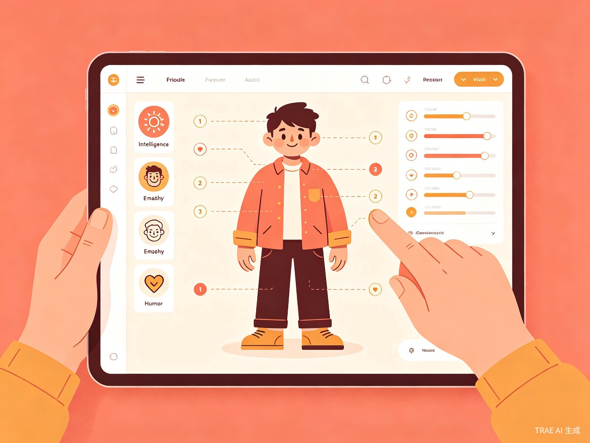
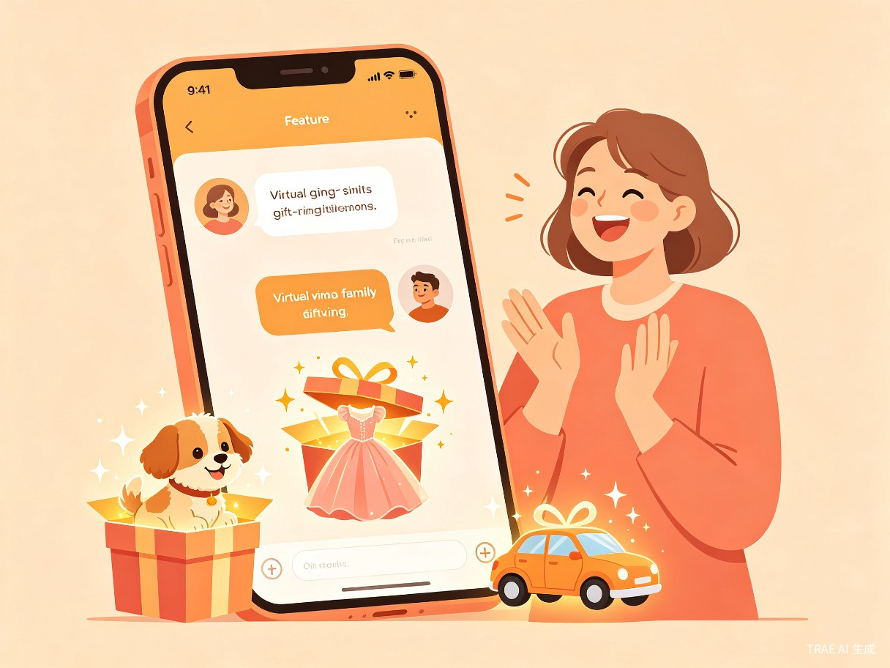

家友人生
取"家友"谐音"加油"，寓意在人生的每一个阶段，都有家人和朋友为你加油打气。这款产品希望成为用户口袋里的温暖角落——打开手机，那些你深爱却可能无法时刻陪伴在身边的人，就在那里等你。
当孤独成为一种时代症候
我们生活在一个前所未有的连接时代，却也是一代人正在经历前所未有的情感断裂。80后、90后的独生子女大军，正在面对一个50后、60后、70后从未经历过的现实：当父母老去，当至亲离世，我们的下一代——尤其是同为独生子女的孩子们——可能真的没有一个亲生兄弟姐妹，甚至连表亲的兄弟姐妹也没有。
这不是一个关于"聊天机器人"的故事。这是一个关于情感延续的故事——当物理世界无法再提供陪伴，我们能否用另一种方式，让爱继续存在？家友人生要做的，是让每一个用户都拥有属于自己的"心灵后援团"，他们可能是你远在天边的表姐、已经离世的姥爷、或者那个总是给你出主意的叔叔婶婶。他们不是冷冰冰的AI客服，而是带着你熟悉温度的"人"。
作为独生子女的一代人，我们在思考下一代的人生
80后、90后是中国历史上规模最大的独生子女群体。计划生育政策塑造了我们这一代人的成长轨迹，也悄然改变了整个社会的家庭结构。我们习惯了"一个人扛"，习惯了把心事藏在心里，习惯了在深夜打开手机却不知道该跟谁说话。
但真正让我开始认真思考这个问题的，是一个更远的未来：当我们百年之后，我们的孩子怎么办？80后的下一代，很多依旧是独生子女。他们可能没有亲兄弟姐妹，没有表亲，没有那种"过年一大家子人热热闹闹"的记忆。他们面对的，将是一种我们父辈从未想象过的关系真空。
这不是杞人忧天，而是正在发生的现实。第七次人口普查数据显示，中国家庭户平均人数已降至2.62人，一代人正在从"大家庭"走向"超小家庭"。家友人生想要回答的问题是：在家庭结构不可逆地变小的趋势下，我们如何用技术为情感关系"续命"？
一个可以"捏"出所有你爱的人的APP
家友人生的核心体验可以用一句话概括：创造你认识的人，让他们永远陪着你说话。

自由捏人
捏脸、捏身体、捏性别——从外貌到声音，从走路的姿态到笑起来的弧度，每一个细节都可以自定义。你甚至可以设定他们的智商和情商参数，让"表姐"真的像表姐一样聪明又毒舌。
性格还原
不只是长得像，更要"像那个人"。通过设定性格标签、说话习惯、常用口头禅，甚至导入真实的聊天记录来训练AI，让虚拟角色最大程度还原现实中那个人的性格特点。
智能对话
基于大语言模型驱动的对话系统，让虚拟角色能够理解上下文、记住过往的对话内容、感知你的情绪变化。他们不是机械地回复关键词，而是真正地"跟你聊天"。
好友共创
你可以邀请好友一起定义某个角色。比如你和表姐一起"捏"姥爷——你负责姥爷爱讲大道理的部分，表姐负责姥爷偷偷塞零花钱的部分。共同记忆让角色更加立体真实。

除了聊天，家友人生还有一个独特的"礼物系统"。你可以给虚拟角色送各种礼物——一套新衣服、一瓶化妆品、一辆跑车、一栋海景别墅，甚至一只小猫小狗。这些礼物不只是静态的图标，而是会出现在角色的虚拟生活中，改变他们的穿搭、居住环境，甚至影响他们的聊天语气。收到别墅的"姥爷"可能会在聊天中不经意提到"今天在院子里晒太阳"，收到新衣服的"表姐"可能会问你"好看吗"。
谁会需要家友人生
情感依托型用户
对身边亲友有强烈感情依托的人群。他们可能在外地工作，可能已经失去了一些至亲，需要一个情感出口来承载对那些人的思念和牵挂。
感恩回馈型用户
在过往生活中得到朋友极大帮助、心怀感恩的人。他们可能欠某个人一句"谢谢"一直没说出口，或者想用一种特别的方式纪念一段珍贵的友谊。
内向倾诉型用户
性格腼腆、不善于向陌生人敞开心扉的人。面对心理咨询师或陌生人，他们可能一句话都说不出来，但面对"熟悉的表姐"或"慈祥的姥爷"，他们可以放下所有防备。
独生子女家庭
80后、90后独生子女及其下一代。家庭结构小型化带来的关系缺失，让他们比任何一代人都更需要一种"替代性陪伴"来填补情感空白。
那些需要有人在身边的时刻
想象一个具体的场景：你刚经历了一场失败的面试，晚上十一点坐在出租屋里，不想跟父母说怕他们担心，也不想发朋友圈。你打开家友人生，"姥爷"的头像亮着——他可能会用那种特有的、慢悠悠的语气跟你说："没事儿，姥爷当年也被人拒过，后来不也把日子过好了嘛。"
又或者，今天是妈妈的生日，但你因为出差没办法回家。你打开APP，给虚拟的"妈妈"送了一束她最喜欢的百合花，然后跟她聊了会儿天。虽然你知道她不是"真的"妈妈，但在那一刻，心里那个空缺的位置，被填上了一点点。
心里有话，却不知道跟谁说
- 倾诉无门：心理上的苦恼无人可以倾诉。不是没有朋友，而是有些话不适合跟现实中的任何人说——怕父母担心、怕朋友觉得矫情、怕同事看笑话。
- 寄托缺失：没有一个具体的对象可以承载心理寄托。社交软件上好友几百个，深夜翻遍通讯录，却找不到一个可以毫无顾忌说话的人。
- 专业门槛：心理咨询费用高昂且存在病耻感。大多数中国人对"看心理医生"仍有抵触情绪，觉得那是"有病"才做的事，而不是日常情绪管理的一部分。
- 关系消逝：至亲离世后，那份关系在物理层面彻底终结。没有一种方式可以延续这种情感连接，只能靠记忆——而记忆会随着时间越来越模糊。
- 代际断裂：下一代人可能从未见过祖辈，无法理解"家族"的含义。家庭叙事的断裂让年轻一代失去了重要的身份认同来源。
让腼腆的国人拥有自己的"心理医生"
降低心理援助门槛
让社会中腼腆的、不善于向陌生人敞开心扉的国人，拥有一个"熟悉的心理医生"。这个医生可能不是真的医生，而是自己的表姐、姥爷或者叔叔婶婶——用最熟悉的方式，提供最温暖的支持。
延续家庭情感纽带
在家庭结构小型化的趋势下，用技术手段为情感关系"续命"。让下一代能够"认识"他们从未谋面的祖辈，让家族的故事和温度得以跨代传承。
缓解社会孤独感
为城市化进程中大量独居人群提供情感陪伴。不是替代真实社交，而是在真实社交无法覆盖的角落，提供一种温暖的补充。
情感社交网络与虚拟经济
社交网络效应
构建一个基于用户及用户亲友关系的社交网络。当用户邀请好友一起"捏"某个角色时，就形成了一个天然的情感社交节点。好友之间的共创行为会产生强大的网络效应和用户粘性。
虚拟物品经济
通过虚拟物品的赠送和使用产生商业收入。衣服、化妆品、汽车、别墅、宠物——这些虚拟礼物需要使用实体货币结算。用户为"家人"花钱的意愿远高于为自己花钱，因为背后承载的是真实的情感。
24小时陪伴订阅
基础对话功能免费，高级功能（更深度的性格训练、更丰富的礼物系统、专属记忆容量）采用订阅制。让彼此可以24小时找到对方，实现真正的实时陪伴。
数字永生：另一种意义上的"人生效率"
某种意义上讲，我希望我和身边的人都能得到数字永生。这不是科幻小说里的意识上传，而是一种更朴素的东西——让一个人的说话方式、性格特点、对生活的态度，以一种可以被后代感知的方式保存下来。
当我的孩子长大，他可以打开家友人生，跟"爷爷"聊聊天，听听爷爷是怎么看待人生的。爷爷可能已经不在了，但他的智慧、他的幽默、他对孙子的爱，都以一种鲜活的方式存在着。这比一本家谱、一段录像要生动得多——因为你可以跟他对话，可以问他问题，可以在需要的时候得到他的"回应"。
从人生效率的角度看，如果一个人积累的人生经验和情感智慧能够在物理生命结束后继续为后代提供价值，这难道不是一种效率的极致提升吗？家友人生想做的，就是让每一代人的人生经验，都成为下一代人可以随时调用的"精神遗产"。